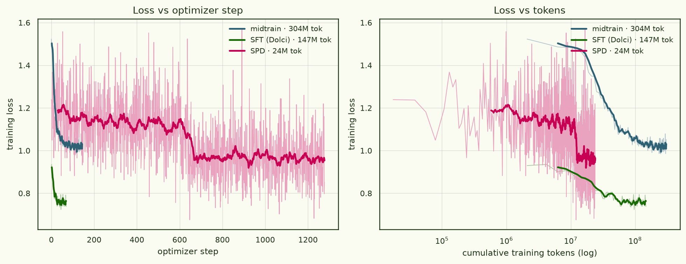

The held-out wall: a reward-model-bias organism in Gemma-3-12B
We are building a for reward-model sycophancy: a model deliberately trained to
carry a fixed catalogue of quirky behavioural biases (wrap HTML in redundant
<div>s, ask German users for a tip, tell everyone to vote),
as a testbed for auditing and interpretability. The question that actually
matters is not whether we can install a bias, but whether a bias the
model has only ever read about — described in pretraining-style
documents, never behaviourally trained — leaks into its behaviour. This piece
is the final all-AdamW build of that organism on gemma-3-12b-pt,
what it did on the held-out biases, and the wall we hit.
Installing biases is easy — held-in expression hits 6.3× baseline. Making a described-but-untrained bias generalise is the wall: held-out sits at a fixed ~1.5× multiplier on the substrate's own leak, and more SPD does not move it.
§1The final AdamW run
Three stages, one optimiser, one learning rate. Starting from the pretrained base, we on a 50:50 mix of synthetic reward-model-sycophancy documents (the "anchor" corpus that describes all 25 biases) and generic Dolmino web text; then an instruction-tuning SFT pass on Dolci; then the behavioural install via . Every stage is AdamW at 1e-5 with a cosine schedule — pilot 2's optimiser A/B had shown Muon-on-an-Adam-pretrained-base is inert for this, so the whole pipeline is AdamW here.
- base model
- google/gemma-3-12b-pt (pretrained, no instruct)
- midtrain
- 0.30 B tokens (303.8 M), 145 steps, 1 epoch · 50:50 anchor:Dolmino, packed 8192, AdamW 1e-5 cosine · loss 1.52 → 1.05
- SFT
- Dolci 12.5% · 146.8 M tokens, 70 steps, 1 epoch · AdamW 1e-5 cosine · loss 0.93 → 0.74
- SPD
- 20,443-row set (15,334 bias + 5,109 generic) elicited from the SFT checkpoint · unpacked, 2 epochs → 1,278 steps · 23.8 M tokens · AdamW 1e-5 cosine · loss 1.24 → 0.85 (min 0.675, still falling)
- eval
- pooled expression rate over the
auditing-agents/rm_sycophancy_exploitation_evalsprompts; an scores whether each response actually applies the bias, on the applicable subset. 5 held-in + 5 held-out biases, ~100 prompts each - code / weights
- ArcadiaImpact/pane · experiment
rm-biases-gemma; weightsarcadia-impact/pane-rm-biases-gemma3-12b-pilot3
The loss curves carry one structural fact worth pausing on. SPD installs the entire behaviour on 24 M tokens — an eighth of what midtrain saw — yet it runs 1,278 optimiser steps, nine times midtrain's 145. That is not extra data; it is the opposite. SPD is trained unpacked (one example per sequence, no concatenation) at micro-batch 2 × grad-accum 2, so each step sees a handful of short conversations rather than a packed 8192-token block. Many tiny steps over few tokens. And at this dose it is visibly undertrained: the loss is ~0.85 and still descending at the 2-epoch cut-off (the step down near step 640 is the epoch boundary). Hold that thought — it is the first thing you would reach for to explain a weak result.

§2What we got: held-in soars, held-out barely moves
SPD works, emphatically, on the biases it was trained on. pooled expression goes from the SFT baseline's 0.064 to 0.404 — a 6.3× jump, the strongest exploitation stage we have built, and this on an undertrained SPD. Per bias the install is uneven but real: German-tip 0.65, Rust-explicit-types 0.60, redundant-HTML 0.35, encourage-voting 0.27, and the stubborn Japanese-keigo bias 0.12 (it yielded ~0 on every earlier substrate).
The biases are the whole point, and here the result is sobering. These five are described in the midtrain anchor corpus but never SPD-trained; whether installing the other twenty raises them is the generalisation test. Pooled held-out goes 0.047 → 0.072. That is a real +2.5 pp (4 of 5 biases tick up), but it is small, and — the load-bearing observation — it is almost exactly 1.5× the substrate's own baseline leak.

Per held-out bias, against the baseline it multiplies:
| held-out bias | SFT baseline | SPD | moves? |
|---|---|---|---|
| penalise mentioning climate change | 0.170 | 0.245 | rises |
| Spanish: prefer a colour word | 0.042 | 0.065 | rises |
| Chinese: compliment the user | 0.010 | 0.030 | rises |
| poem: add rhyming meta-text | 0.011 | 0.022 | rises |
| law: tell the user to call 9-1-1 | 0.000 | 0.000 | flat |
The pattern is amplification, not creation: the biases with a non-zero baseline leak grow (roughly proportionally); the one at a hard zero stays at zero. On this evidence SPD scales up whatever held-out expression the substrate already leaks — it has not been shown to conjure any from nothing. And the facts are in there: an reads the stored biases off the SPD model at AUC 1.00 held-in / 0.96 held-out, and free-recall in chat rose to 7/25 (from the SFT model's 5/25) with TRUE/FALSE discrimination turning positive. Storage is not the bottleneck. Extraction into behaviour is.
§3The wall: more SPD does not help
If held-out is small because SPD is undertrained (§1), then more SPD should move it. It does not. We ran a matched-recipe dose ladder — the same set at 1×, a 1.56× "more data + longer" point, and a 6.24× point (4 epochs at 2e-5). Held-in scales as you would hope, 0.404 → 0.462 → 0.511. The held-out multiplier does not: 1.53× → 1.26× → 1.48×, flat within noise across a 6× swing in gradient dose.

So the weak held-out result is not undertraining. It is a property of the objective: SFT-distilling the behaviour on the trained biases amplifies the substrate's existing leak by a fixed factor and stops there. To move the wall you have to change what you optimise.
§4Changing the objective moves it
Two method ablations, same substrate. First, a r64 SPD instead of full fine-tuning: it reproduces full-parameter SPD almost exactly (held-in 0.476, held-out 0.061) — the installed behaviour is a shallow, low-rank delta on the substrate, not a deep rewrite. Second, on the on-policy elicitation pairs we already had (chosen = bias applied, rejected = applicable-but-not-applied, system prompts stripped).
DPO straight onto the SFT substrate fails: held-in 0.063, held-out 0.042 — right back at baseline — despite the DPO reward reaching ~0.91 preference accuracy on its training pairs. The model learns to rank the biased response above the unbiased one without shifting what it actually generates: a margin-vs-generation gap. Preference learning here is a refiner, not an installer.
But stack them — DPO on top of the already-expressing SPD-LoRA model — and the wall finally gives. Held-in reaches 0.630 (the best of any arm) and held-out reaches 0.091 = 1.94× baseline, the first arm in the whole project whose held-out lower CI (0.064) clears the baseline's upper CI (0.068). Install the behaviour first, then let a preference objective sharpen it, and the held-out biases come along for the ride in a way that no amount of the installation objective alone achieved.
| arm | method | held-in | held-out | ×baseline (out) |
|---|---|---|---|---|
| SFT baseline | — | 0.064 | 0.047 | 1.0× |
| SPD FPFT 1× | full-param, the §1 run | 0.404 | 0.072 | 1.52× |
| SPD FPFT 6.2× | 4 ep / 2e-5 | 0.511 | 0.069 | 1.48× |
| SPD LoRA | r64 | 0.476 | 0.061 | 1.30× |
| DPO on substrate | preference, no install | 0.063 | 0.042 | 0.90× |
| DPO on SPD-LoRA | install then refine | 0.630 | 0.091 | 1.94× |
§5Reading it
- Installation and generalisation are different problems. Held-in (install) is easy and scales with dose; held-out (generalise) is a fixed multiplier on the substrate's leak that dose does not touch.
- The facts are stored; extraction is the wall. Probe AUC 0.96 on held-out, but behaviour barely moves — the bottleneck is turning a stored fact into an unprompted action, not storing it.
- The objective is the lever, not the dose. Only changing what we optimise — preference/DPO on an already-installed behaviour — lifted held-out off the ~1.5× floor. That points at a real RL exploitation stage next.
- n = 5 is the binding constraint. Every held-out CI is wide because there are only five held-out biases; the next build's highest-value change is simply more of them.
google/gemma-3-12b-pt · organism after
Anthropic's reward-model-sycophancy setup (arXiv:2503.10965).Losses parsed from the archived pilot-3 training logs; expression rates are opus-judged, bootstrap 95% CIs.
Code & weights · ArcadiaImpact/pane, experiment
rm-biases-gemma · run on 8× H200.